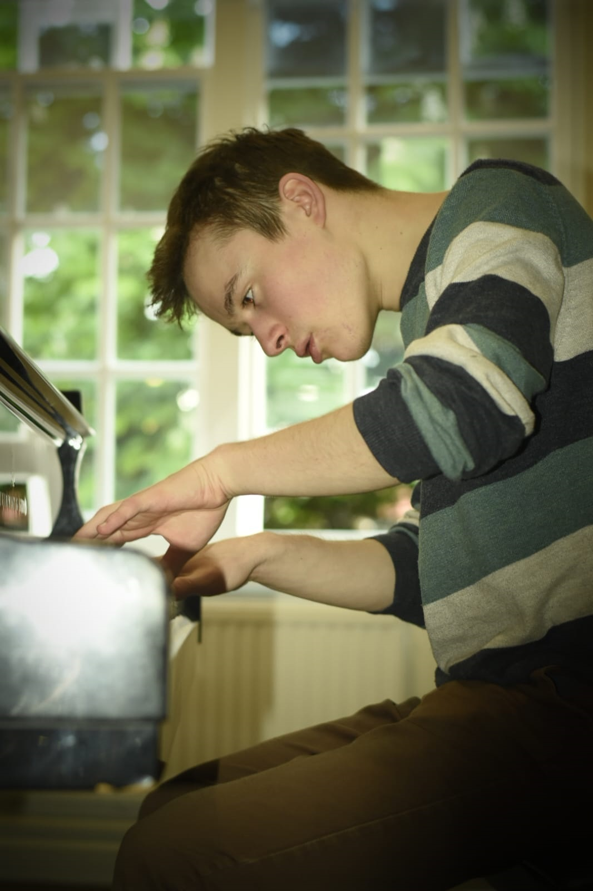

Artist Profile: Edward Tait

Edward Tait is a British composer, studying at the Royal Academy of Music, under the guidance of Gareth Moorcraft and Louise Drewett. His music has been performed across the United Kingdom, Ireland and the United States, at venues including the Royal Festival Hall, St John’s Smith Square and Westminster Abbey. He has also received performances by renowned ensembles like the London Sinfonietta, Carducci Quartet, Orion Orchestra and Lloyd’s Choir, and has had success in the Berlioz International Music Competition and the Clements Prize for Composers.
Edward is the Artistic Director of the MetroLand Music Festival, as well as the co-founder of the Charlton Sunday Series. He is currently composing a song cycle, based on original texts by Mollie Mardel.
Catalogue of Works
- Novelette (Op. 1)
for cello & piano - Piano Quintet (Op. 2)
- Ghostly Dance (Op. 3)
for clarinet quintet - Variations on a Theme from Mary Poppins (Op. 4)
for solo cello - Trireme (Op. 5)
for orchestra - Fantasia for Four Hands (Op. 6)
- Sinfonietta (Op. 6)
for brass quintet - British Fantasia (Op. 7)
for wind quintet - The Night Hunter (Op. 8)
for chamber ensemble - Starry Night (Op. 9)
for violin, viola & piano - Seven Note Fanfare (Op. 10)
for 2 trumpets & violin - Prelude for Violin and Piano (Op. 11)
- Rondo for String Quartet (Op. 12)
- Piano Sonata No. 1 (Op. 13)
- Jazz Elegy (Op. 14)
for solo piano - Moment of Minecraft Ambience (Op. 14)
for solo piano - Alpenhornhymne (Op. 15)
for brass trio - Prelude in C minor (Op. 16)
for solo piano - Glenealo (Op. 17)
for string orchestra - Passacaglia for Wind Quintet (Op. 18)
- Gaziantep Dance (Op. 18)
for 2 bendir & piano - Mo Li Hua (Op. 19)
for orchestra - Le Ballon Rouge (Op. 18)
soundtrack for chamber ensemble - Three Short Pieces for Wind Trio (Op. 18)
for clarinet, bassoon & trumpet - Fugue for String Trio (Op. 21)
- Two Sketches Written from the Dartmouth Steam Railway (Op. 20)
for solo piano - Caledonian Voyage (Op. 22)
improvised soundtrack for solo piano - Quartet for the End of the Day (Op. 23)
for clarinet quartet - Prelude, after Bach and Siloti (Op. 23)
for electronics - Engine (Op. 24)
for mixed percussion - Elegy for Violin and Guitar (Op. 25)
- Macbeth (Op. 26)
for orchestra - Full Fathom Five (Op. 27)
for SATB choir - It was a lover and his lass (Op. 28)
for SATB choir - Le Voyage dans la Lune (Op. 29)
soundtrack for chamber orchestra - Lincoln's Speech (Op. 30)
for snare drum & piano - Take, O Take (Op. 31)
for baritone & guitar - Response (Op. 32)
for solo piano - Prelude and Fugato (Op. 32)
for oboe & bassoon - One Spirit Voice (Op. 33)
for electronics - Disney Medley, I Guess (Op. 33)
for chamber ensemble - Passage of Time (Op. 34)
for string quartet - Interlude for Piano Trio (Op. 35)
- Waltzing Matilda (Op. 36)
arrangement for chamber ensemble - Solo Fantasia No. 1 for Piano (Op. 37)
- Herbstlied (Op. 38)
for solo piano - The Planets (2023)
arrangement for solo piano - Hunstanton Prelude (Op. 40)
for chamber ensemble - String Trio No. 1 (Op. 41)
- Allegretto for Clarinet and Piano (Op. 42)
- Crenark Hill (Op. 43)
for orchestra - Viennese Autumn Waltz (Op. 44)
for string quartet - Fantasia-Elegy (Op. 45)
for clarinet & piano - Fleeting Manhattan (Op. 46)
for orchestra - Eclogue (Op. 47)
for wind quintet - Empire of the Sun (Op. 48)
arrangement for violin & piano - In Memoriam Lulu (Op. 49)
for solo piano - Mirabile Mysterium (Op. 49)
for SSATB choir - EDTA (Op. 50)
for cello, piano & snare drum - Three Scottish Dances (Op. 51)
for oboe quartet - Barton Coast (Op. 52)
for saxophone quartet - Ash Grove (2024)
for chamber orchestra - Rhapsody for Sextet (Op. 54)
for chamber ensemble - Lillibulero (Op. 55)
for solo piano - Capriccio (Op. 56)
for bassoon duo - Ballade (Op. 57)
for clarinet trio - Glitter Is Not Gold (Op. 58)
for solo cello - In the Bleak Midwinter (2024)
for SATB choir - Pervasion (Op. 60)
for solo clarinet - Ten Cycles (Op. 61)
for solo flute - Chamber Concerto (Op. 62)
for chamber orchestra - Ecstasio (Op. 63)
for cello octet - Star of the East (Op. 64)
for SSAATTBB choir - HexRAMeron Variation and Fugue (Op. 65)
for six-hand piano - Minuet on a Theme by Ravel (Op. 66)
for solo viola - Triptych (Op. 67)
for solo violin - Ignited (Op. 68)
for solo bassoon - Minuet or Trio? (Op. 69)
for 2 violins, cello & harpsichord - Bartok Improvisations on Hungarian Peasant Songs (Op. 48)
arrangement for chamber orchestra - Three Intermezzi (Op. 70)
for solo piano - Reverie (Op. 71)
for solo harp - Fruhlingslied (Op. 72)
for solo piano - The Story of Music (Op. 73)
for mixed quartet - Bullseye! (Op. 74)
for solo piano - Ballade (Op. 75)
for violin & piano - Sonata (2025)
for solo clarinet - Shifting (Op. 77)
for string trio - Family Mix-Up (Op. 78)
for oboe & piano - Peter Pan (Op. 79)
for orchestra - Elegy (Op. 80)
for six-hand piano - Four Miniatures for Alto Flute (Op. 81)
- Pulsating (2025)
for flute and guitar - Engineer's Paradise (2025)
for four-hand piano - Movement from Composers Parallels (Op. 81)
for violin, viola & piano - View from Church Stretton (Op. 81)
for string orchestra - Don Oíche Úd i mBeithil (Op. 48)
arrangement for soprano, violin & cello - Prokofiev Visions Fugitives (Op. 48)
arrangement for chamber orchestra - Satie Le Piccadilly (Op. 48)
arrangement for bassoon & string quartet - Variation on Sumer is i-cumen in (Op. 81)
for solo bassoon - Atkinsongs (Op. 81)
for 3 basses & piano - Fanfares for Dawn & Dusk (Op. 81)
for oboe & electronics - Ashes Beneath the Ice (Op. 81)
for cello & piano - my troubled sense doth move (Op. 81)
for soprano, cornett & harpsichord - Rachmaninov Bogoroditse Devo (Op. 48)
arrangement for cello quartet - Cloches (Op. 81)
for piano
The Planets
Ash Grove
In the Bleak Midwinter
Sonata
Instrumentation: solo clarinet
Duration: circ. 8 minutes
Premiere: *TO BE ANNOUNCED*
Click here to purchase the score